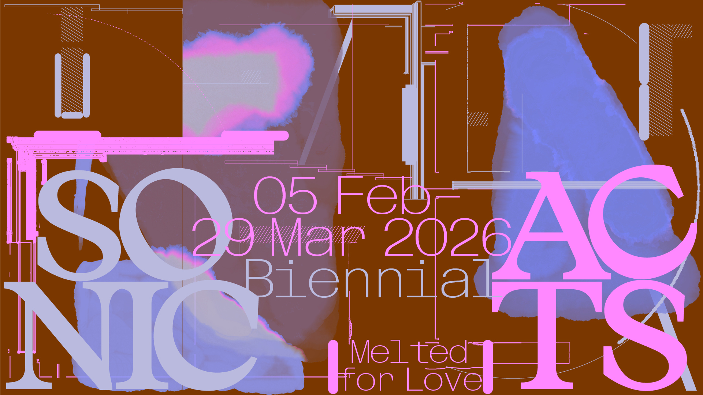

Detailpagina met een side kolom picture
Sonic Acts Biennial 2026: Melted for Love
Adelita Husni-Bey, Alina Schmuch, Bernardo Gaeiras, Diana Policarpo, Lower Levant Company, Maeve Brennan, Olga Micińska
Een greep uit één van de vele fantastische sprookjesboeken die Thé Tjong-Khing illustreerde. De tentoonstelling Melted for Love, onderdeel van de Sonic Acts Biennial 2026, vindt plaats in W139, Arti et Amicitiae en de Rozenstraat en onderzoekt hoe het begrip ‘thuis’ verandert onder invloed van de klimaatcrisis, koloniale geschiedenissen en gedwongen migratie.
De tentoonstelling brengt installaties, films, geluidswerken en performances samen die laten zien hoe land, lichamen en ecosystemen worden gevormd en aangetast door diverse systemen van uitbuiting. Door te luisteren naar de echo’s die deze aantasting achterlaten, reflecteert de tentoonstelling zich op de gebaren van liefde en verbondenheid met land en gemeenschap als vormen van verzet en herstel.
